1. 网络通信协议
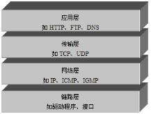
图一TCP/IP网络模型
链路层：链路层是用于定义物理传输通道，通常是对某些网络连接设备的驱动协议，例如针对光纤、网线提供的驱动。
网络层：网络层是整个TCP/IP协议的核心，它主要用于将传输的数据进行分组，将分组数据发送到目标计算机或者网络。
传输层：主要使网络程序进行通信，在进行网络通信时，可以采用TCP协议，也可以采用UDP协议。
应用层：主要负责应用程序的协议，例如HTTP协议、FTP协议等。
1.1 IP地址和端口号**
要想使网络中的计算机能够进行通信，必须为每台计算机指定一个标识号，通过这个标识号来指定接受数据的计算机或者发送数据的计算机。在TCP/IP协议中，这个标识号就是IP地址，它可以唯一标识一台计算机。
通过IP地址可以连接到指定计算机，但如果想访问目标计算机中的某个应用程序，还需要指定端口号。不同的在计算机中，应用程序是通过端口号区分的。端口号是用两个字节（16位的二进制数）表示的，它的取值范围是0~65535，其中，0~1023之间的端口号用于一些知名的网络服务和系统应用，用户的普通应用程序需要使用1024以上的端口号，从而避免端口号被另外一个应用或服务所占用。
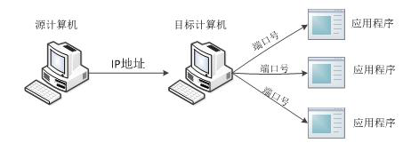
1.2 InetAddress类
JDK中提供了一个InetAdderss类，该类用于封装一个IP地址，并提供了一系列与IP地址相关的方法，下表中列出了InetAddress类的一些常用方法。
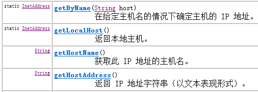
上图中，列举了InetAddress的四个常用方法。其中，前两个方法用于获得该类的实例对象，第一个方法用于获得表示指定主机的InetAddress对象，第二个方法用于获得表示本地的InetAddress对象。
2. UDP与TCP协议
UDP和TCP是传输层的两个重要的高级协议，其中UDP是User Datagram Protocol的简称，称为用户数据报协议，TCP是Transmission Control Protocol的简称，称为传输控制协议。
2.1 UDP协议**
UDP是无连接通信协议，即在数据传输时，数据的发送端和接收端不建立逻辑连接。简单来说，当一台计算机向另外一台计算机发送数据时，发送端不会确认接收端是否存在，就会发出数据，同样接收端在收到数据时，也不会向发送端反馈是否收到数据。由于使用UDP协议消耗资源小，通信效率高，所以通常都会用于音频、视频和普通数据的传输例如视频会议都使用UDP协议，因为这种情况即使偶尔丢失一两个数据包，也不会对接收结果产生太大影响。
### 2.2 TCP协议
TCP协议是面向连接的通信协议，即在传输数据前先在发送端和接收端建立逻辑连接，然后再传输数据，它提供了两台计算机之间可靠无差错的数据传输。在TCP连接中必须要明确客户端与服务器端，由客户端向服务端发出连接请求，每次连接的创建都需要经过“三次握手”。第一次握手，客户端向服务器端发出连接请求，等待服务器确认，第二次握手，服务器端向客户端回送一个响应，通知客户端收到了连接请求，第三次握手，客户端再次向服务器端发送确认信息，确认连接。整个交互过程如下图所示。
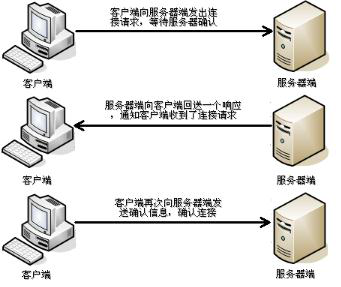
由于TCP协议的面向连接特性，它可以保证传输数据的安全性，所以是一个被广泛采用的协议，例如在下载文件时，如果数据接收不完整，将会导致文件数据丢失而不能被打开，因此，下载文件时必须采用TCP协议。
## 3. UDP通信
### 3.1 DatagramPacket类**
JDK中提供了一个DatagramPacket类，该类的实例对象就相当于一个集装箱，用于封装UDP通信中发送或者接收的数据。
在创建发送端和接收端的DatagramPacket对象时，使用的构造方法有所不同，接收端的构造方法只需要接收一个字节数组来存放接收到的数据，而发送端的构造方法不但要接收存放了发送数据的字节数组，还需要指定发送端IP地址和端口号。

使用该构造方法在创建DatagramPacket对象时，没有指定IP地址和端口号。很明显，这样的对象只能用于接收端，不能用于发送端。因为发送端一定要明确指出数据的目的地(ip地址和端口号)，而接收端不需要明确知道数据的来源，只需要接收到数据即可。
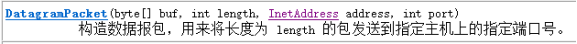
使用该构造方法在创建DatagramPacket对象时，不仅指定了封装数据的字节数组和数据的大小，还指定了数据包的目标IP地址（addr）和端口号（port）。该对象通常用于发送端，因为在发送数据时必须指定接收端的IP地址和端口号，就好像发送货物的集装箱上面必须标明接收人的地址一样。
DatagramPacket类中的常用方法如下表所示。
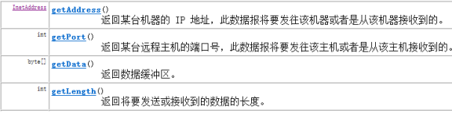
3.2 DatagramSocket类**
DatagramSocket类的作用就类似于码头，使用这个类的实例对象就可以发送和接收DatagramPacket数据包，发送数据的过程如下图所示。

l DatagramSocket类的构造方法：
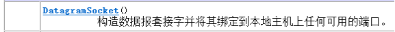
该构造方法用于创建发送端的DatagramSocket对象，在创建DatagramSocket对象时，并没有指定端口号，此时，系统会分配一个没有被其它网络程序所使用的端口号。
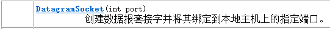
该构造方法既可用于创建接收端的DatagramSocket对象，又可以创建发送端的DatagramSocket对象，在创建接收端的DatagramSocket对象时，必须要指定一个端口号，这样就可以监听指定的端口。
l DatagramSocket类的常用方法：
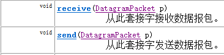
3.3 UDP实现网络通信
要实现UDP通信需要创建一个发送端程序和一个接收端程序，很明显，在通信时只有接收端程序先运行，才能避免因发送端发送的数据无法接收，而造成数据丢失。因此，首先需要来完成接收端程序的编写。
- UDP完成数据的发送
1 | /* |
- UDP完成数据的接收
1 | /* |
4. TCP通信
TCP通信同UDP通信一样，都能实现两台计算机之间的通信，通信的两端都需要创建socket对象。
区别在于，UDP中只有发送端和接收端，不区分客户端与服务器端，计算机之间可以任意地发送数据。
而TCP通信是严格区分客户端与服务器端的，在通信时，必须先由客户端去连接服务器端才能实现通信，服务器端不可以主动连接客户端，并且服务器端程序需要事先启动，等待客户端的连接。
在JDK中提供了两个类用于实现TCP程序，一个是ServerSocket类，用于表示服务器端，一个是Socket类，用于表示客户端。
4.1 ServerSocket类
JDK的java.net包中提供了一个ServerSocket类，该类的实例对象可以实现一个服务器段的程序。
- ServerSocket的构造方法：
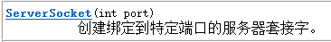
使用该构造方法在创建ServerSocket对象时，就可以将其绑定到一个指定的端口号上（参数port就是端口号）。
接下来学习一下ServerSocket的常用方法，如表所示。
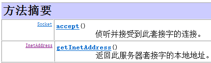
ServerSocket对象负责监听某台计算机的某个端口号，在创建ServerSocket对象后，需要继续调用该对象的accept()方法，接收来自客户端的请求。
当执行了accept()方法之后，服务器端程序会发生阻塞，直到客户端发出连接请求，accept()方法才会返回一个Scoket对象用于和客户端实现通信，程序才能继续向下执行。
4.2 Socket类
- Socket类同样提供了多种构造方法：
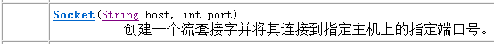
使用该构造方法在创建Socket对象时，会根据参数去连接在指定地址和端口上运行的服务器程序，其中参数host接收的是一个字符串类型的IP地址。
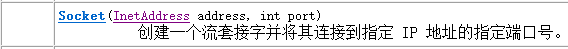
该方法在使用上与第二个构造方法类似，参数address用于接收一个InetAddress类型的对象，该对象用于封装一个IP地址。
在以上Socket的构造方法中，最常用的是第一个构造方法。
- 接下来学习一下Socket的常用方法：
| 方法声明** | 功能描述** |
|---|---|
| int getPort() | 该方法返回一个int类型对象，该对象是Socket对象与服务器端连接的端口号 |
| InetAddress getLocalAddress() | 该方法用于获取Socket对象绑定的本地IP地址，并将IP地址封装成InetAddress类型的对象返回 |
| void close() | 该方法用于关闭Socket连接，结束本次通信。在关闭socket之前，应将与socket相关的所有的输入/输出流全部关闭，这是因为一个良好的程序应该在执行完毕时释放所有的资源 |
| InputStream getInputStream() | 该方法返回一个InputStream类型的输入流对象，如果该对象是由服务器端的Socket返回，就用于读取客户端发送的数据，反之，用于读取服务器端发送的数据 |
| OutputStream getOutputStream() | 该方法返回一个OutputStream类型的输出流对象，如果该对象是由服务器端的Socket返回，就用于向客户端发送数据，反之，用于向服务器端发送数据 |
在Socket类的常用方法中，getInputStream()和getOutStream()方法分别用于获取输入流和输出流。当客户端和服务端连接建立后,自动创建IO流对象，所以使用流对象的时候不需要new，直接用socket类的get方法获取，数据是以IO流的形式进行交互的，从而实现通信。
接下来通过一张图来描述服务器端和客户端的数据传输，如下图所示。
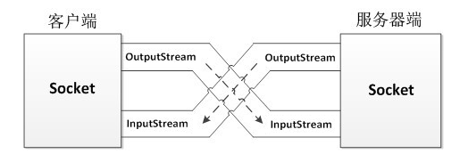
4.3 TCP实现网络通信
1 | /* |
完成了服务器端程序的编写，接下来编写客户端程序。
1 | /* |